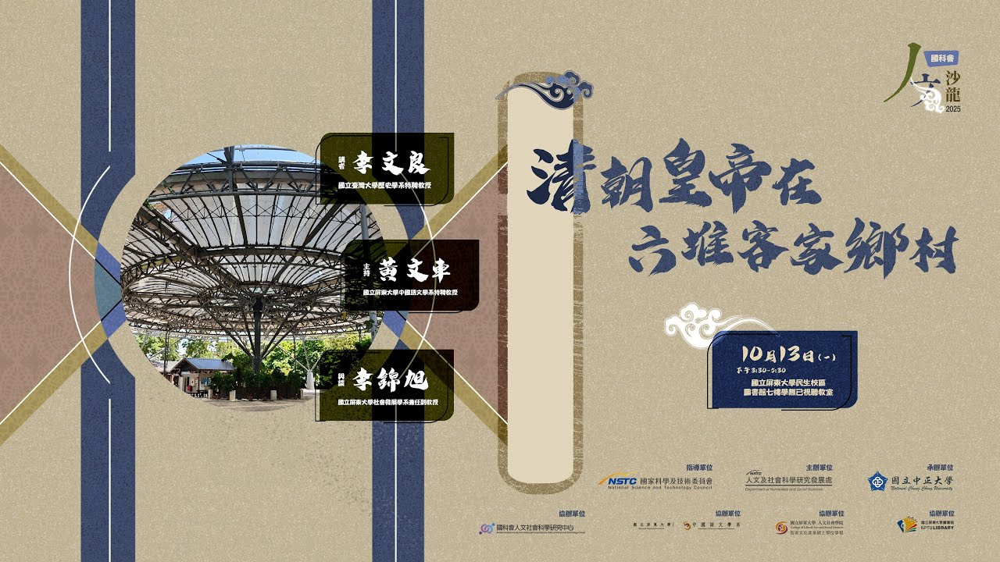
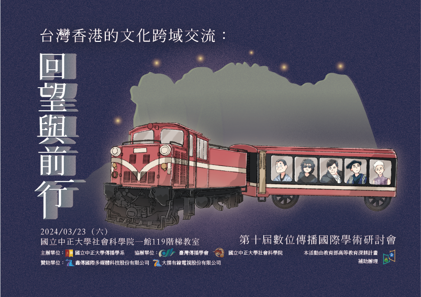

W
作品／專案
W
作品／專案
行銷專案與社群經營
Cake 2024 校園大使 社群圖文與短影音行銷
負責校園社群推廣行銷（包含短影音企劃與貼文圖文製作），並於校內舉辦實體宣傳活動。
#校園大使
#社群行銷
#短影音企劃
IP設計與社群視覺
公共電視《公視購》暑期實習 社群圖文行銷
於公視數位內容部實習期間，參與其電商平台《公視購》的社群圖文製作，並試作原創 IP 吉祥物 「小GO」 的設計與Guidebook。
#社群圖文
#IP設計
#行銷企劃
社群行銷與短影音剪輯
影集《向流星許願的我們》、FOCASA《幾米男孩的 100 次勇敢》 社群Reels剪輯
負責影集與展演專案的精華片段挑選與 Reels 剪輯，有效提升社群曝光度 。
#Reels剪輯
#短影音行銷
#影視社群
新聞採訪與影音專題
實習新聞媒體《中正E報》 新聞專題採訪與製作
製作多項深度新聞專題，展現扎實採訪與剪輯能力，報導並獲 PeoPo 公民新聞獎肯定。
#新聞採訪
#專題報導
#影音剪輯
媒體編輯與視覺統籌
實習新聞媒體《中正E報》 總編輯／視覺設計
擔任總編輯與視覺設計，確立品牌色彩規範，並統籌整體影音與文字新聞視覺 。
#視覺設計
#專案統籌
#媒體編輯
專輯音樂製作與統籌
畢業製作：音樂專輯《Glow Up》 製作人
從概念發想、群眾募資、音樂與 MV 產製，到周邊商品開發與線上線下實體宣傳活動，進行全方位的專案管理。
#專輯製作
#專案統籌
#周邊商品

長影音後製與剪輯
國家科學及技術委員會人文沙龍 影音剪輯
常態性負責人文沙龍講座影音後製，已累積剪輯 20+ 部演講座談影片，處理素材總時長達 40 小時以上。
#長影音剪輯
#後期製作
#講座紀錄

活動視覺與品牌識別
電子音樂派對《Spirited Away》 視覺識別／美術設計
為電子音樂派對打造視覺識別，設計海報、門票與流程表，精準傳達活動氛圍。
#視覺識別
#美術設計
#活動海報

活動視覺與品牌識別
第十屆數位傳播國際學術演討會
活動識別／視覺設計
設計活動主視覺、海報、背板、邀請函、名牌、桌牌、三折頁等實體文宣。製作社群平台宣傳圖，並獨立建置與維護活動官方網頁。
#活動主視覺
#網頁建置
#實體文宣